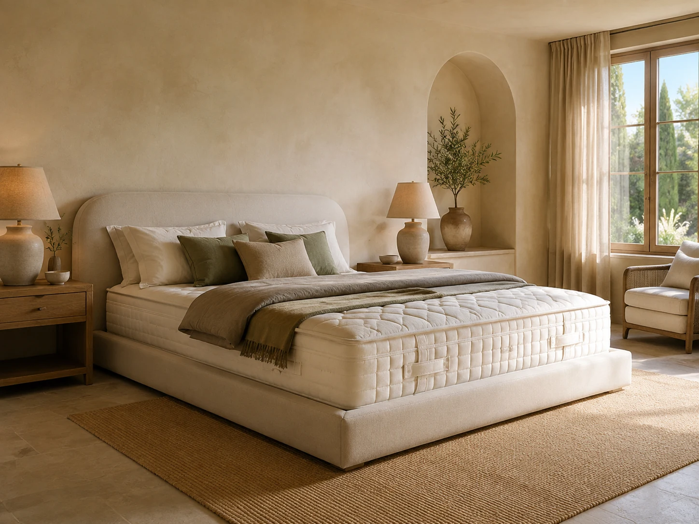
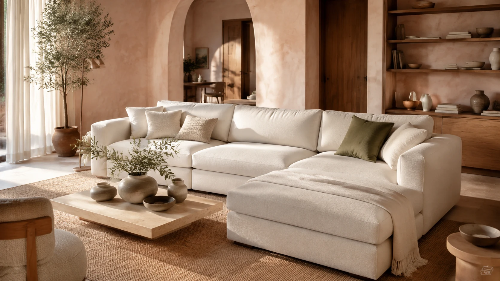
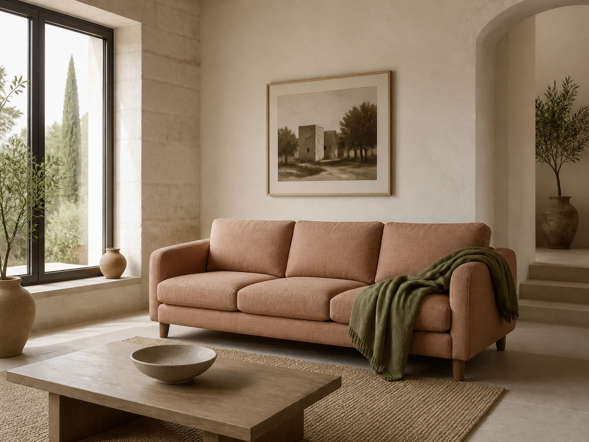
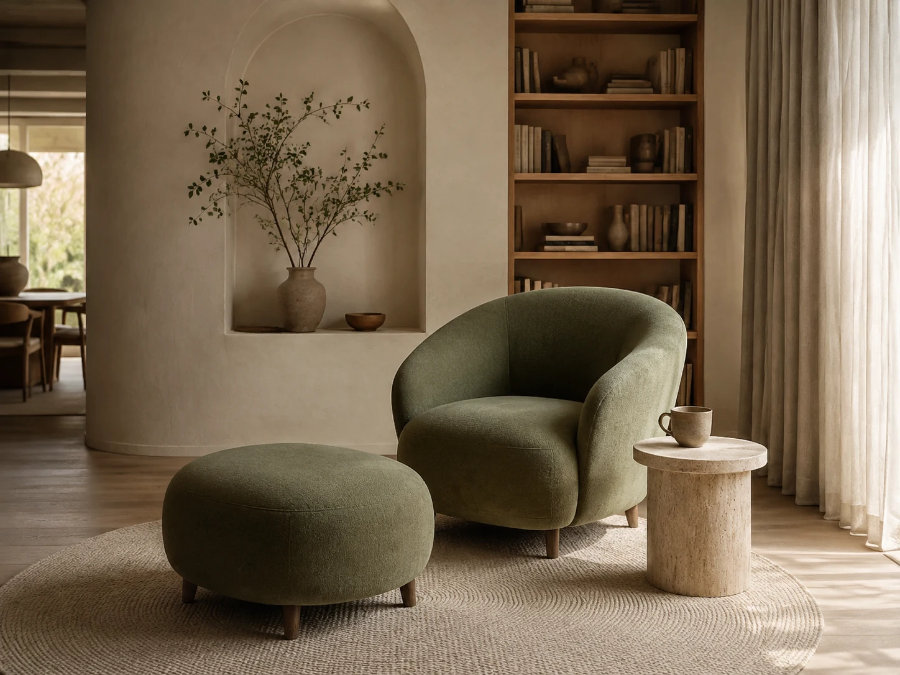
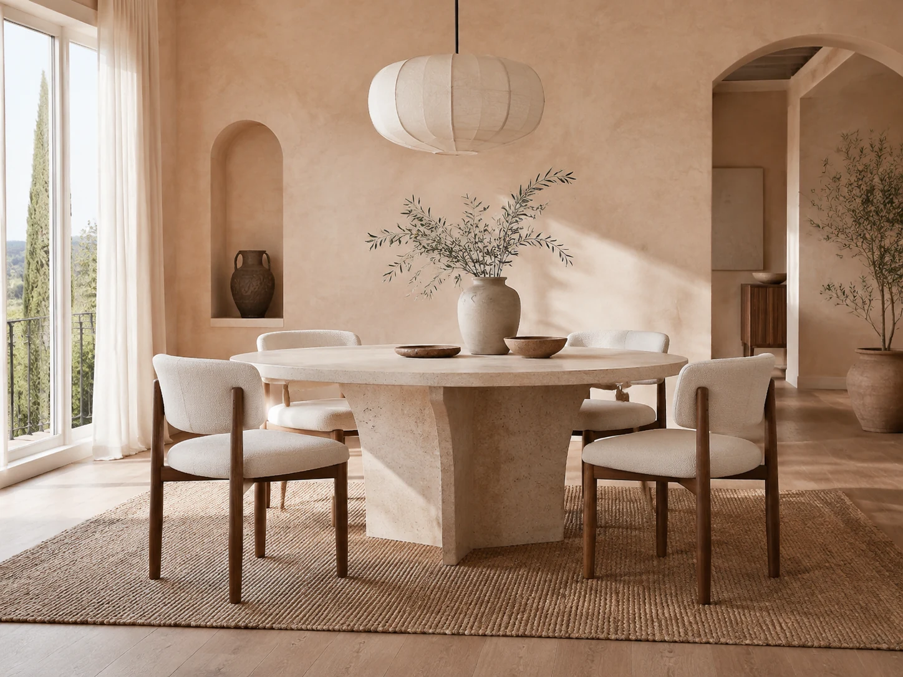
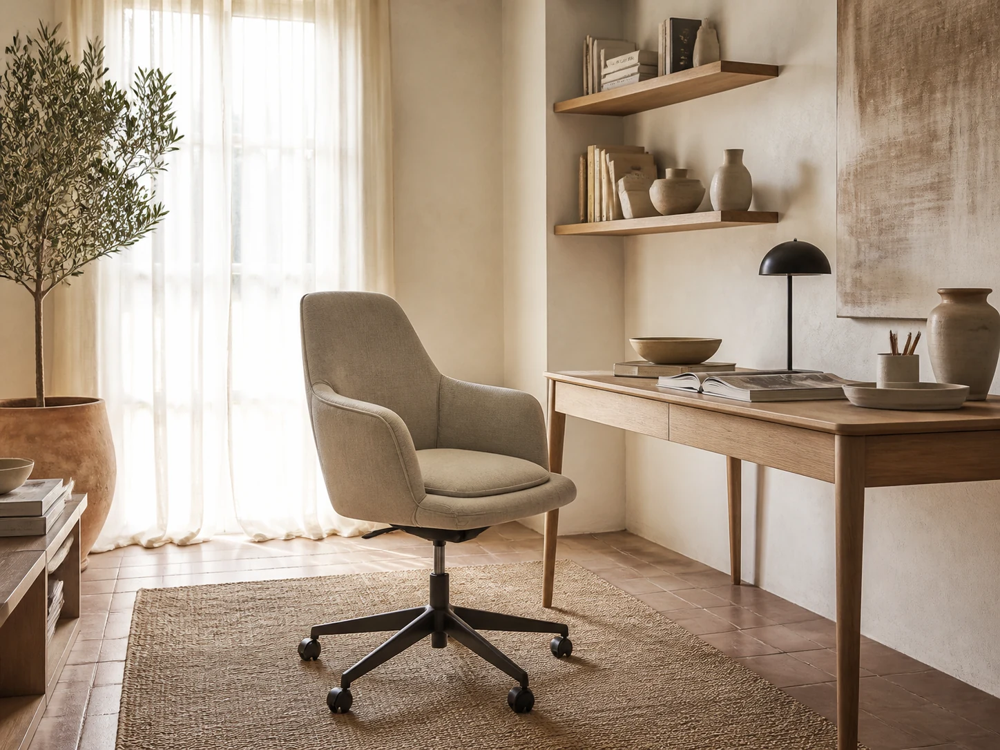
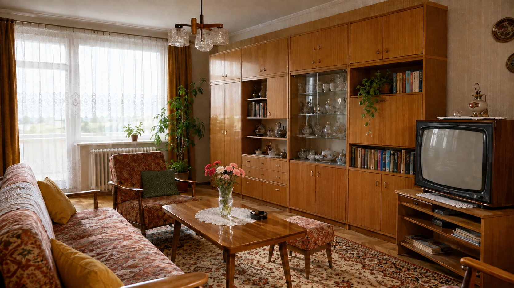

06
Matrac és kárpitozott ágy
A huzat alatt és körül is érdemes figyelni a tisztaságra. A matrac típusa, mérete, oldalszáma és kezelési előírása mellett az ágyvég vagy kárpitozott keret állapotát is vedd számításba.
Tisztítás megtervezéseAz este csendje, puha textilek, egy gondosan ápolt matrac. A hálószobád kényelme a kevésbé látható részleteken is múlik.
Matractisztítás Solton, figyelemmel a bútorodra és az otthonodra.

A bútor formája csak az első támpont. Az anyaga, a kialakítása, a használata és a korábbi foltkezelések együtt határozzák meg, milyen tisztítás lehet megfelelő. Válaszd ki, melyik darabodról szeretnél gondoskodni.
A huzat alatt és körül is érdemes figyelni a tisztaságra. A matrac típusa, mérete, oldalszáma és kezelési előírása mellett az ágyvég vagy kárpitozott keret állapotát is vedd számításba.
Tisztítás megtervezése
A családi esték központja, ahol naponta sokféle használat nyoma találkozik. Az ülőfelület mellett a karfák, a háttámlák és az elemek közötti rések állapotára is érdemes figyelni.
Tisztítás megtervezése
Egy elegáns kétszemélyes szófa vagy vendégágyként is használt heverő más-más igényt jelenthet. A fekvőfelületet és a kinyitható részeket is mutasd meg az egyeztetéskor.
Tisztítás megtervezése
A kedvenc pihenőhelyen gyakran ugyanazt a fejtámlát és könyöklőt használjuk. A jól körülhatárolható, terheltebb részek külön figyelmet kérnek, különösen világos vagy finom tapintású kárpitnál.
Tisztítás megtervezése
Reggelik, vendégségek, hosszú beszélgetések: az étkezőszéken morzsák, ital- és ételfoltok is megjelenhetnek. A háttámla és az ülőlap tisztítási igénye eltérhet, ezért mindkettőt érdemes számba venni.
Tisztítás megtervezése
A munkanapok alatt órákon át érintkezünk az ülőlappal és a háttámlával. Az otthoni dolgozósarok szövetborítású széke ugyanúgy rendszeres gondoskodást igényel, mint a nappali bútorai.
Tisztítás megtervezéseA bútorok képei generált enteriőr-illusztrációk. Az anyag tisztíthatóságát mindig egyedileg egyeztetjük.
Emlékszel a fényes szekrénysorra, a mintás fotelre, a kihúzható heverőre és a csipkefüggönyön átszűrődő délutáni fényre? A szocialista korszak sok magyar otthonát idéző tárgyakhoz családi történetek kapcsolódnak. Egy megőrzött régi bútor ma is lehet kényelmes, szerethető és karakteres része a lakásnak.

Egykor · 1980-as évekMa · kortárs otthonA mai enteriőrökben helyet kapnak a lágy ívek, a természetes hatású szövetek, a világos felületek és az összehangolt részletek. Lakberendezővel tervezett terekben és saját ötletekből kialakított otthonokban is számít, hogyan találkozik a kanapé, a szék, a fény és a szín. Egy jó berendezés a mindennapi életedhez igazodik.
Akár egy örökölt fotelt szeretsz, akár egy új moduláris kanapét választottál, a rendszeres ápolás figyelem a már meglévő érték felé. A tisztítást érdemes az anyaghoz és az állapothoz igazítani, hogy a bútor a használat mellett is gondozott maradhasson.
A gondosan megválasztott színek és formák akkor mutatnak igazán szépen, ha a textilek ápoltak. Az anyagnak megfelelő, rendszeres tisztítás az értékmegőrzés része: a lerakódó por és szennyeződés a szövet kopását is fokozhatja. A gyártó kezelési útmutatója ezért minden tisztítás kiindulópontja.Kvadrat: kárpitszövetek tisztítása és ápolása
A gondoskodás azonban nem csak látvány. Jó érzés úgy leülni, vendéget fogadni vagy lefeküdni, hogy tudod: figyelmet kapott a sokat használt felület. A cél egy ápolt, kellemesen használható bútor, reális elvárásokkal az anyag korától és állapotától függően.
A már meglévő, szeretett bútorért.
A naponta használt felületek ápolásáért.
Azért a jó érzésért, amikor megpihensz.
Válaszd ki a bútorokat, add meg a mennyiséget és a kért részleteket. A képek a bútortípus felismerését segítik; az összesítő a kiválasztott szolgáltatásokat és az aktuális árlista szerinti összeget mutatja.
A meglévő előtte–utána fotókon tényleges tisztítások eredményeit láthatod. Mozgasd a választóvonalat, és figyeld meg a kárpit részleteit. Minden szövet, folt és használati előzmény más, így az eredmény is bútoronként eltérhet.
Hívj minket
 ElőtteUtána
ElőtteUtánaA bőr természetes zsírossága, a hajjal érintkező felületekre kerülő faggyú, a kozmetikumok maradványai és a háztartási por együtt is hozzájárulhatnak a lerakódásokhoz. A fejtámlán, a könyöklőn vagy az ülőlap elülső, combbal érintkező részén idővel szürkés, sötétszürke, akár feketés elszíneződés jelenhet meg.
A haj és a bőr természetes zsírossága a háttámla felső részén hagyhat nyomot. A rendszeres ápolás segít időben észrevenni a lerakódást.
Ettől a bútor elhasználtnak tűnhet, és az érintése is kellemetlenebbé válhat. A sötét folt ugyanakkor nem önmagában higiéniai vizsgálat: színeződés, anyagkopás vagy ruhafesték átadása is állhat mögötte. Tisztítás előtt ezért fontos tisztázni az előzményeket, és megkülönböztetni az eltávolítható szennyeződést a maradandó változástól.
A háziporatkák mikroszkopikus élőlények, amelyek matracokban, ágyneműben és kárpitozott bútorokban is előfordulhatnak. Elhalt, levált emberi és állati hámsejtekkel táplálkoznak. Jelenlétük egy gondosan takarított otthonban sem kizárt.NIEHS: háziporatkák és beltéri allergének
Az atkák ürülékében és testmaradványaiban található allergének az arra érzékenyeknél allergiás panaszokat, illetve asztmás tüneteket válthatnak ki vagy ronthatnak. A háziporatkák petékkel szaporodnak; fejlődésüknek kedvezhet a meleg, párás környezet.University of Kentucky: a háziporatkák életciklusa és allergénjei
A rendszeres tisztítás a por és a szennyeződések eltávolítását szolgálja; a teljes atka-, pete- és allergénmentesség nem ígérhető. Az otthoni allergénterhelés kezelésében a páratartalom, az ágynemű ápolása és a megfelelő védőhuzat együtt is szerepet kaphat. Tartós tünetekkel allergológushoz érdemes fordulni.NIEHS: háziporatkák és beltéri allergének
A szövethez illő fejjel és a gyártó által engedett beállítással porszívózz. A varrások és rések is kapjanak figyelmet; friss folyadékfoltot óvatos felitatással kezelj, erős dörzsölés helyett.Kvadrat: kárpitszövetek tisztítása és ápolása
Az ágyneműt hetente, a kezelési címkén engedett programmal mosd. A körülbelül 40–50%-os relatív páratartalom segíthet kevésbé kedvező környezetet teremteni az atkáknak; ezt páramérővel követheted.AAAAI: poratka-kitettség csökkentésének szakmai irányelve AAAAI: páratartalom és beltéri allergia
Tisztítás után várd meg, amíg a bútor teljesen megszárad, és biztosíts megfelelő légmozgást. Nedves textilre ne kerüljön takaró vagy ágynemű; a szükséges időt az anyag és a környezet is befolyásolja.Muuto: anyagok és bútorápolás
A képes összeállítóban megadhatod, milyen darabok tisztítását szeretnéd.
Méret, anyag, foltok, korábbi kezelések: egy fotó is segítheti az egyeztetést.
A tisztítás módja és várható eredménye a bútor tényleges állapotától függ.
A tisztítás mellé a teljes száradáshoz szükséges idővel is számolj.
Szívesen segítünk eligazodni az anyagok, méretek és lehetőségek között.
+36 70 240 8141Nincs minden otthonra érvényes időköz. A használat intenzitása, a gyerekek és háziállatok jelenléte, a látható szennyeződés és a gyártói előírás együtt ad támpontot. Érdemes rendszeresen átnézni a sokat használt felületeket.
Ezt az anyag és a kezelési előírás alapján lehet megítélni. Küldj képet a bútorról és a címkéről. A megfelelő módszer kiválasztása és a rejtett helyen végzett próba különösen fontos.Kvadrat: kárpitszövetek tisztítása és ápolása
Teljes folteltávolítást nem lehet minden esetben ígérni. A régi folt, a házi vegyszeres kezelés, a színvesztés vagy a kopás korlátozhatja az eredményt. Mondd el, mi történt a felülettel, és mivel próbáltad kezelni.
Lehet lerakódás, de kopás, szálirányváltozás vagy színátadás is befolyásolhatja a látványt. A különbség azért fontos, mert a tisztítás nem állítja helyre automatikusan a károsodott vagy kifakult szövetet.
Ezt nem ígérjük. Az allergia kezelése orvosi feladat; az otthoni allergénterhelés csökkentése több összehangolt lépést igényelhet. A poratkák teljes eltávolítása még tiszta otthonban sem biztosítható.NIEHS: háziporatkák és beltéri allergének
Igen: a peték az atkák életciklusának részei. Ezért érdemes tartós ápolási szokásokban gondolkodni. Egy tisztításról azonban nem állítható automatikusan, hogy minden atkát és petét eltávolít.University of Kentucky: a háziporatkák életciklusa és allergénjei
Teljes száradás után. Az időt a szövet, a töltet, a hőmérséklet és a légmozgás is befolyásolja. Az ülőfelületet vagy matracot addig ne takard le, és kövesd a kapott szárítási útmutatást.Muuto: anyagok és bútorápolás
A bútortípust, mennyiséget, hozzávetőleges méretet, a tisztítandó oldalakat és a címet. Különleges folt vagy anyag esetén egy közeli fotó, illetve a gyártói címke képe is hasznos.
Kalocsa, Baja, Kiskőrös, Szekszárd, Paks, Solt és Dunaföldvár térségében nincs online időpontfoglalás. Az árösszesítőből előkészített e-mailt nyithatsz az info@ecocleantisztito.hu címre. A levél tartalmazza a kiválasztott tételeket és a tájékoztató összeget; add hozzá az elérhetőségedet, majd küldd el a saját leveleződből. A levélszöveget ki is másolhatod. Ezután felvesszük veled a kapcsolatot az ár és az időpont egyeztetéséhez. Az ajánlatkérés nem jelent lefoglalt időpontot.
Egy nyugodt este a kanapén, reggeli az étkezőben, pihenés a kedvenc fotelben. Gondoskodjunk azokról a felületekről, amelyek naponta körülvesznek.
Megtervezem a tisztítást